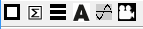

Showsbx
Showsbx is used to display image sequences recorded with a neurolabware 2 photon microscoop. Sbx files contain image data in a continuous binary format and to open and display the images, the program needs to import parameters form an accompanying mat file with the same file name.
Showsbx can display individual images at any position or as a movie if you press the run button. It also can display different channels if you press the chan button in the lower right corner. However only one channel can be displayed at the same time.
If the mmage data contains several depth sections, it will try to import the the neccessary parameters to slice the data appropriately, and you are given the choice to select one depth.
Pressing the right mouse button on the image area opens a context menu giving you two menu choices.
The first gives you the possibility to delete the frame presently diplayed (Deleting a frame involves rewriting the whole file exluding the selected frame which can take a lot of time!!).
With the second item you can change the data value range that is diplayed (effectively changing brightness and contrast of the images).
Below the menu bar is a series of tools for cropping, averging, splitting, aligning, exporting the signal from a selected region and to export an mp4 movie.

The cropping tool allows you to select a square region within the images. This has no immediate effect, but the values saved will be used to crop each image when aligning the images.
The averging tool allows you to average a selected number of images beginning at the image displayed.
The splitting tool is used to split the image sequences in separate files for each imaging depth (this has become obsolete because a selected depth can be directly exported to Normcorre).
The align tool calls Normcorre, developed by the Simons foundation, to align the images after selecting a depth and defining the optimal crop.
The export ROI signal tool is used to export the signal of a selected region to the matlab work space. After pressing this button an area selector is shown that can be used to select a desired region. After clicking in this region the signal is exported.
The movie button simply converts the image sequence at the selected depth, cropped and with the contrast and brightness presently selected to an mp4 movie file.